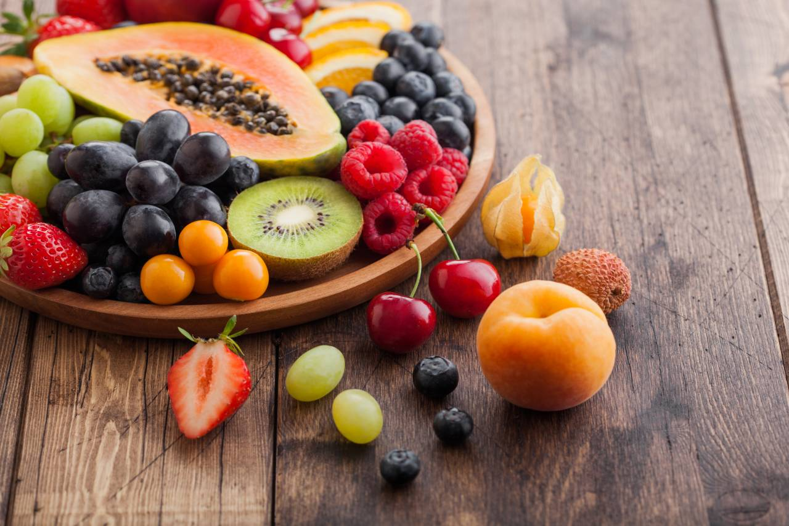
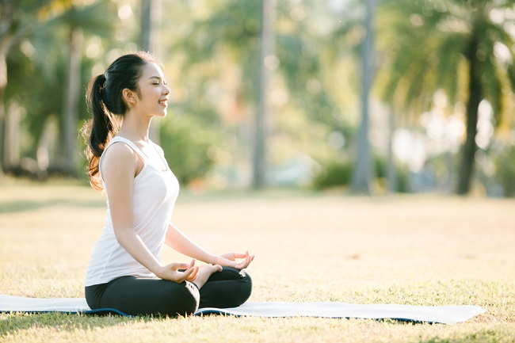
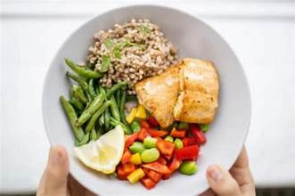

🍓 Pola Dunia Sehat!
Kesehatan adalah investasi jangka panjang yang paling berharga bagi setiap manusia, terutama di masa remaja yang penuh dengan aktivitas dan perkembangan. Menjalani pola hidup sehat bukan berarti kita harus membatasi diri dari kesenangan, melainkan belajar untuk menyeimbangkan kebutuhan tubuh dengan asupan yang berkualitas. Bayangkan tubuh kita adalah sebuah mesin super canggih yang butuh perawatan rutin agar tidak cepat rusak di kemudian hari.
Melalui website ini, saya ingin mengajak teman-teman semua untuk kembali mencintai alam dengan mengonsumsi buah-buahan segar yang kaya akan vitamin. Pola hidup sehat itu seru, berwarna, dan penuh energi! Mari kita jelajahi langkah-langkah mudah untuk menjaga tubuh tetap bugar dan pikiran tetap tajam setiap harinya.

🏃 Manfaat Fisik
Manfaat fisik dari berolahraga secara rutin dan menjaga pola makan sangatlah luas. Selain menjaga berat badan tetap ideal, metabolisme tubuh kita akan bekerja lebih efisien dalam membakar energi. Olahraga membantu memperkuat otot jantung dan memperlancar peredaran darah ke seluruh tubuh, termasuk ke otak. Dengan stamina yang prima, kita tidak akan mudah merasa lelah saat belajar di sekolah atau saat mengikuti kegiatan ekstrakurikuler yang padat.
🧘 Kesehatan Mental
Kesehatan mental sama pentingnya dengan kesehatan fisik. Meditasi dan teknik pernapasan dapat membantu kita mengelola stres dan rasa cemas akibat tekanan tugas sekolah. Selain itu, asupan buah yang mengandung antioksidan tinggi terbukti mampu menjaga mood kita tetap stabil. Pikiran yang jernih memudahkan kita untuk fokus, berkreativitas, dan menjalin hubungan sosial yang positif dengan orang-orang di sekitar kita.

🍱 Menu Harian
Menerapkan pola hidup sehat bisa dimulai dari piring makan kita. Pastikan ada kombinasi sayuran hijau, buah-buahan berwarna cerah, protein, dan karbohidrat kompleks. Hindari makanan yang mengandung pemanis buatan secara berlebihan dan jangan lupa untuk minum air putih minimal 8 gelas sehari. Konsistensi dalam menjaga menu harian adalah kunci untuk mendapatkan tubuh yang sehat secara menyeluruh.

✨ Profile ✨
Gichaella Fredela Armadya
Kelas: 92 / No. Absen: 15
"Kesehatan adalah kecantikan yang abadi. Mari mulai hidup sehat dari sekarang!"